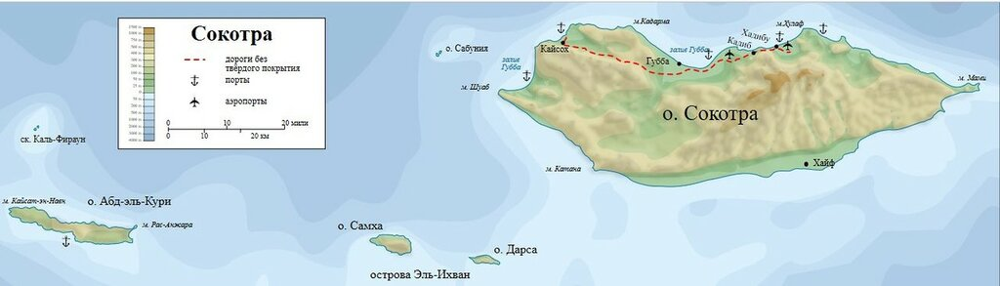
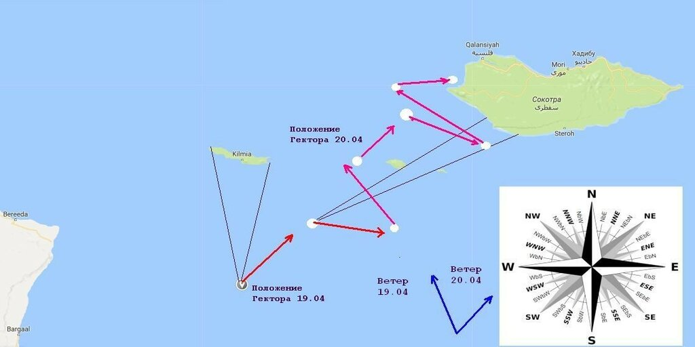

Осень, ветер, листья ― буры.
Прочной хочется еды.
К. М. Симонов
Главнаго Командира Черноморскаго флота и портовъ.
Вице-Адмирала A. С. Грейга.
ПО ЭСКАДРѢ .
Іюня 17-го дня 1829 года, № 66.
Судно, коему сдѣланъ будетъ сигналъ: подойти для переговора, приближаясь къ флагманскому кораблю (буде флотъ идетъ не на фордевиндъ) съ вѣтру, отнюдь не должно спускаться ему подъ корму, ни приводить подъ вѣтромъ у него бейдевиндъ, если его корабль лежитъ симъ курсомъ; ибо въ пѣрвомъ случаѣ при свѣжемъ вѣтрѣ призываемое судно пройдетъ такъ скоро, что и неуспѣетъ выслушатъ дѣлаемаго приказанія; а въ послѣднемъ, паруса его обезвѣтрятся, оно останется какъ въ дрейфѣ , и флагманскій корабль будетъ на него наваливать. Для избѣжанія всѣхъ сихъ неудобствъ, судно, спускающееся съ вѣтра для переговора, должно, приходя на ближнюю дистанцію съ навѣтренной стороны, привести къ вѣтру и лечь однимъ курсомъ съ флагманомъ, пока получитъ приказанія; идущее же съ подвѣтра, по означенному сигналу, обязано пройти контра-галсомъ подъ кормою и, буде неясно выслушаетъ приказанія, то, поворотивъ немедленно оверъ-штагъ, стараться достигнуть, какъ выше сказано, навѣтренной стороны флагмана; тоже самое должны наблюдать и суда, подходящія съ кильватера, то есть держаться на вѣтрѣ у флагмана.
Скрягин С.А. Сборник приказов и инструкций адмиралов (1898)
That frigate will not weather the point this board. Фрегатъ не пройдетъ на вѣтрѣ мыса этимъ галсомъ.

April 19. The wynd S.S.E., we stered N.E. and by E., and then descryed an Island to the northward, which we iudged to be Adelcuria, and being in the latitude of 11ds30m we saw another Island, bearing of us N.E. and by E., and after that another that bare E. and by N., northerly, and then we lay up E. and by S. and when we came nere the Islands called Los Hermanos,1 between them we had sight of Socotora, then we kept our loofe awhile purposing to wether the westerest point of the Hermanos, but could not and therefore bore up and went to leeward thereof, and beingf westward thereof about a league, had 17 ds 10 m variation..
April 20. Being to the northward of the westerlyest of the Hermanos, and with all near Socotora, we lay close E.S.E. with a S.W. wynd, seeking to wether Socotora but could not, and therefore we hove up and went to the westward thereof, between Socotora and a rocke lyeing to the westward thereof, between Socotora and a rocke lyeing to the Westward with [3] hummocks, and about noone came to an anker to the northward of the westerlyest point of the Island, in 10 fadoms water; in an open Roade, the rocke with 3 hummocks called Savoniza bearing of us N.W. and by W. There we finding no fresh water, we ankered there all night.
" A Journal kept by m[e William Hawkins in] my voyage to the East I[ndies, beginning the 28 of] March ao 1607, concerning all [that happened vnto] the good Ship called the [Hector in the saied] Viago, I being Captauie t[hereof]."

19 апреля. Ветер зюйд-зюйд-вест. Мы шли курсом норд-ост-тень-ост, когда к северу заметили остров, который, как мы считали, был островом Абд-эль-Кури; находясь на широте 11°30' мы обнаружили еще один остров в направлении норд-ост-тень-ост от нас, а затем севернее еще один в направлении ост-тень-норд. Мы легли на курс ост-тень-зюйд, и когда подошли к островам, которые назывались Los Hermanos [ныне острова The Brothers (по-арабски Эль-Ихван, Братья) – g._g.], между ними мы увидели Сокотру. После этого мы привели корабль к ветру, чтобы обойти с наветренной стороны западную оконечность островов Hermanos, но сделать этого не смогли, поэтому спустились под ветер к западу от них примерно на одну лигу, магнитное склонение в этой точке 17°10'.
20 апреля. Находясь к северу от самой западной точки островов Hermanos, совсем рядом с Сокотрой, мы пошли в бейдевинд курсом ост-зюйд-ост при ветре зюйд вест, пытаясь обойти с наветренной стороны Сокотру, но не смогли и поэтому мы изменили курс и пошли в западном направлении между Сокотрой и скалами с тремя утесами, лежащими также к западу, и около полудня стали на якорь к северу от западной оконечности острова, при глубине 10 фатомов на открытом рейде, в точке, из которой скалы с тремя утесами, которые назывались Savoniza [Сабуния] были видны к норд-вест-тень-весту. Мы не нашли там пресной воды, простояв на якоре всю ночь.